Chapter 8: Cryptography — The Building Blocks¶
Cryptography is the toolkit of locks, keys, seals and fingerprints that keeps digital life private and trustworthy. Meet Alice and Bob, who want to talk secretly, and Eve, who is listening: every algorithm here helps them hide messages, prove who they are, spot tampering or look after their keys. Each entry is labelled Recommended, Acceptable, Legacy, Broken, Regional or Emerging so you know what is safe to choose.
8.1 Symmetric Block Ciphers¶
A block cipher scrambles data in fixed-size chunks ("blocks", usually 16 bytes) using a secret key. It is called symmetric because the same key locks and unlocks the data, so both sides must already share it.

Think of it like…
Think of a lockbox where Alice and Bob each hold an identical copy of the same key: whatever Alice locks, only someone with that key can open.
Real-world example
Northwind Clinic stores patient records on a laptop. The laptop's disk encryption uses AES-256 with a key protected by the device's security chip. When the laptop is stolen from a car, the thief sees only scrambled bytes. The clinic reports a lost device, but no patient data is exposed.
How it works¶
- Alice and Bob agree on a secret key (often delivered using public-key cryptography).
- The message is cut into equal-sized blocks.
- Each block goes through many rounds of mixing and substitution driven by the key.
- A 'mode of operation' (see later section) chains the blocks together safely.
- Bob runs the same steps in reverse with the same key to get the original back.
Who uses it
Every operating system, browser, VPN, bank, cloud provider and phone uses block ciphers, AES above all, to protect stored and transmitted data.
Key takeaway
Use AES (128 or 256-bit key) in an authenticated mode such as GCM; avoid DES, 3DES and other 64-bit-block ciphers.
Going deeper
- Block size matters as much as key size: 64-bit-block ciphers such as DES, 3DES, Blowfish and IDEA start repeating blocks after roughly 32 GB under one key, the weakness behind the 2016 Sweet32 attack.
- AES-128 offers 128-bit security, far beyond brute force; Grover's quantum algorithm roughly halves effective key strength, which is why NSA's CNSA 2.0 requires AES-256 for national-security systems.
- AES-NI instructions (Intel and AMD since about 2010) and ARMv8 crypto extensions run AES at several gigabytes per second per core and avoid the cache-timing leaks of table-based software.
- AES is a substitution-permutation network; DES, Blowfish, Camellia and SM4 use Feistel-style structures that split the block and swap halves each round, so the same circuit can decrypt.
- AES is specified in FIPS 197 (2001, editorially updated 2023) and ISO/IEC 18033-3; FIPS 140-3 modules must use implementations tested by NIST's Cryptographic Algorithm Validation Program.
- A block cipher alone encrypts just one block; real-world security comes from pairing it with a sound mode such as GCM plus careful key and nonce handling (see the next sections).
Common mistakes & misconceptions
- Believing AES-128 is weak; it is unbroken in practice, and AES-256 is chosen mainly for long-term or quantum-cautious requirements.
- Encrypting without authentication, so ciphertext can be silently altered; use an AEAD mode or add a MAC.
- Using a password directly as the key; generate random keys or derive them with a password-based KDF such as Argon2id or PBKDF2.
Try it: Encrypt and decrypt a local test file with AES-256 (password-based key via PBKDF2)¶
echo "hello Bob" > secret.txt
openssl enc -aes-256-cbc -pbkdf2 -salt -in secret.txt -out secret.enc
openssl enc -d -aes-256-cbc -pbkdf2 -in secret.enc
Key algorithms, protocols & standards¶
| Name | What it does | Example |
|---|---|---|
| AES-128 / AES-192 / AES-256 NIST (designed by Daemen & Rijmen) · Block cipher · Recommended |
The world's standard cipher since 2001; 128-bit blocks with 128, 192 or 256-bit keys, built into most modern CPUs for speed. | HTTPS, Wi-Fi WPA2/WPA3, BitLocker, FileVault and WhatsApp backups all rely on AES to keep data unreadable. |
| Camellia Mitsubishi Electric & NTT (Japan) · Block cipher · Regional |
A Japanese cipher with the same block and key sizes as AES and comparable security; an ISO/IEC standard. | Optional TLS cipher suites and Japanese government systems use Camellia; VeraCrypt also offers it. |
| ARIA NSRI (South Korea) · Block cipher · Regional |
South Korea's national 128-bit block cipher, structurally similar to AES, published as RFC 5794. | Korean government and public-sector systems use ARIA in TLS and data-at-rest products to meet national certification rules. |
| SEED KISA (South Korea) · Block cipher · Regional |
An older Korean 128-bit block cipher from 1998, widely used in Korean online banking and e-commerce. | Korean banking security plug-ins historically encrypted customer sessions with SEED before browsers dropped those plug-ins. |
| SM4 Chinese State Cryptography Administration · Block cipher · Regional |
China's national 128-bit block cipher, mandatory for many Chinese government and financial systems; included in ISO/IEC 18033-3. | A bank in China encrypts card data with SM4 to satisfy national commercial-cryptography regulations. |
| Kuznyechik (Grasshopper) Russian standard GOST R 34.12-2015 · Block cipher · Regional |
Russia's modern 128-bit block cipher with a 256-bit key, replacing the older GOST 28147-89 (Magma). | Russian government VPNs and certified security products must use Kuznyechik instead of AES. |
| Twofish Bruce Schneier et al. · Block cipher · Acceptable |
An AES-competition finalist: fast, free to use, with no practical attacks, but far less common than AES. | VeraCrypt users can choose Twofish, alone or cascaded with AES, for an encrypted container. |
| Serpent Anderson, Biham & Knudsen · Block cipher · Acceptable |
An AES finalist designed with a very large security margin; slower than AES but considered extremely conservative. | Privacy-minded users pick Serpent in VeraCrypt or LUKS when speed matters less than extra caution. |
| 3DES (Triple DES) IBM / NIST (ANSI X9.52) · Block cipher · Legacy |
Runs DES three times to stretch its life; its small 64-bit block allows the 'Sweet32' attack. NIST disallowed it for encryption after 2023. | Old payment terminals and mainframe links still using 3DES are being migrated to AES during PCI DSS audits. |
| DES IBM / NBS (1977) · Block cipher · Broken |
The 1970s US standard with a 56-bit key, short enough to guess by brute force in hours. | In 1998 the EFF's 'Deep Crack' machine found a DES key in 56 hours, ending its credibility. |
| Blowfish Bruce Schneier (1993) · Block cipher · Legacy |
A fast, free 1990s cipher with a 64-bit block; still lives inside the bcrypt password hash. | Old password managers and VPNs used Blowfish; new designs choose AES or ChaCha20 instead. |
| IDEA Lai & Massey (ETH Zurich) · Block cipher · Legacy |
A 1990s cipher with a 64-bit block, made famous as the default in early PGP email encryption. | Messages encrypted with PGP 2.x in the 1990s used IDEA; modern OpenPGP software uses AES. |
8.2 Stream Ciphers¶
A stream cipher turns a secret key into an endless stream of random-looking bytes (a "keystream") and mixes it with the message one byte at a time. It is fast and handles data of any length, but the same key and starting value must never be reused.
Think of it like…
It is like a pair of identical 'magic pads' of random numbers: Alice adds the pad to her message, Bob subtracts the same pad, and anyone without the pad sees noise.
Real-world example
Bob's phone at a café connects to his company VPN, Kestrel Tech, using WireGuard. WireGuard always encrypts with the ChaCha20 stream cipher, which runs fast in plain software and is kind to the battery. A snooper on the café Wi-Fi captures only scrambled packets.
How it works¶
- Both sides share a secret key plus a unique 'nonce' (a number used once) for each message.
- The cipher expands key + nonce into a long keystream.
- Each byte of the message is combined (XOR) with the next keystream byte.
- The receiver generates the identical keystream and reverses the combination.
- A separate authenticator (MAC) should be added so tampering is detected.
Who uses it
Mobile networks, Wi-Fi and Bluetooth chips, VPNs, messaging apps and TLS on phones rely on stream ciphers.
Key takeaway
Never reuse a key+nonce pair, and always pair a stream cipher with authentication (for example ChaCha20-Poly1305).
Going deeper
- Ciphertext equals plaintext XOR keystream, so two messages encrypted with the same keystream let an eavesdropper XOR the ciphertexts and obtain the XOR of both plaintexts, the classic 'two-time pad' failure.
- ChaCha20 uses only 32-bit additions, rotations and XORs (an 'ARX' design) over 20 rounds, which makes fast, constant-time software easy on chips without AES hardware.
- Nonce sizes: ChaCha20 in RFC 8439 uses a 96-bit nonce, safe with a counter; XChaCha20's 192-bit nonce is safe to pick at random; AES-GCM with random 96-bit nonces is limited to about 2^32 messages per key.
- Any block cipher in counter (CTR) mode behaves like a stream cipher, which is exactly how AES-GCM encrypts; see the Modes of Operation section.
- 4G and 5G radio encryption uses three algorithm families: SNOW 3G (EEA1/EIA1), AES (EEA2/EIA2) and ZUC (EEA3/EIA3); 3GPP has also studied 256-bit successors for future networks.
- Europe's eSTREAM project (2004-2008) picked software-oriented ciphers (HC-128, Rabbit, Salsa20/12, SOSEMANUK) and hardware-oriented ones (Grain, MICKEY, Trivium).
Common mistakes & misconceptions
- Reusing a nonce 'because the messages are short'; a single repeat under the same key can reveal both plaintexts.
- Believing encryption stops tampering; flipping a ciphertext bit flips the same plaintext bit, so always add a MAC or use an AEAD.
- Building a home-made keystream from a hash or random() function; use a vetted cipher from a standard library.
Try it: Encrypt and decrypt a local test file with the ChaCha20 stream cipher¶
echo "meet at noon" > notes.txt
openssl enc -chacha20 -pbkdf2 -salt -in notes.txt -out notes.enc
openssl enc -d -chacha20 -pbkdf2 -in notes.enc
Key algorithms, protocols & standards¶
| Name | What it does | Example |
|---|---|---|
| ChaCha20 Daniel J. Bernstein; RFC 8439 (IETF) · Stream cipher · Recommended |
A fast, simple and very secure stream cipher that performs well on phones and chips without AES hardware. | TLS 1.3 on Android, WireGuard VPN tunnels and OpenSSH sessions commonly use ChaCha20. |
| Salsa20 Daniel J. Bernstein (2005) · Stream cipher · Acceptable |
ChaCha20's predecessor, selected in the European eSTREAM portfolio; still secure but mostly superseded by ChaCha20. | The NaCl and libsodium 'secretbox' function uses XSalsa20 to encrypt small messages between apps. |
| SNOW 3G ETSI SAGE / 3GPP · Stream cipher · Acceptable |
The stream cipher behind the 3G/4G/5G encryption option UEA2/128-EEA1, protecting calls and data over the air. | A 4G phone call can be encrypted between handset and cell tower using SNOW 3G (128-EEA1). |
| ZUC Chinese Academy of Sciences / 3GPP · Stream cipher · Regional |
A Chinese-designed stream cipher adopted by 3GPP as 128-EEA3 for 4G/5G radio encryption, favoured by Chinese regulators and operators. | Chinese mobile operators encrypt LTE and 5G radio traffic with ZUC-based 128-EEA3. |
| RC4 Ron Rivest (RSA, 1987) · Stream cipher · Broken |
Once everywhere (WEP, early TLS); its output has statistical biases that leak plaintext. Banned from TLS by RFC 7465 in 2015. | WEP Wi-Fi keys protected by RC4 could be cracked in minutes with free tools. |
| A5/1 GSM / ETSI (1987) · Stream cipher · Broken |
The 2G GSM phone call cipher; researchers published rainbow tables in 2009 that recover keys from intercepted calls. | Researchers showed intercepted 2G calls could be decrypted using precomputed A5/1 tables on ordinary hardware. |
| E0 Bluetooth SIG · Stream cipher · Legacy |
The original Bluetooth Classic encryption cipher with known weaknesses; modern 'Secure Connections' uses AES-CCM instead. | An old car hands-free kit pairing with legacy Bluetooth may still use E0; newer devices use AES-CCM. |
| XChaCha20 Extension of ChaCha20 (libsodium; IETF draft) · Stream cipher · Recommended |
ChaCha20 with a 192-bit nonce, large enough to choose nonces at random without realistic risk of repeats. | A note-taking app built on libsodium seals each note with XChaCha20-Poly1305 and a fresh random 24-byte nonce. |
8.3 Modes of Operation & Authenticated Encryption¶
A block cipher only scrambles one 16-byte block; a "mode" is the recipe for safely encrypting long messages with it, and the best modes ("authenticated encryption", AEAD) both hide the message and detect any tampering. The famous 'ECB penguin' shows why the recipe matters: encrypt a picture of Tux, the Linux penguin, block-by-block with the naive ECB mode and the penguin's outline is still clearly visible. That happens because identical patches of colour turn into identical scrambled patches, so the patterns leak.
Three modes compared
| ECB | CBC | GCM (AEAD) | |
|---|---|---|---|
| Hides patterns | No (ECB penguin) | Yes | Yes |
| Detects tampering | No | No, needs a MAC | Yes, 128-bit tag |
| IV / nonce | None | Random, unpredictable IV | Unique 96-bit nonce |
| Parallel encryption | Yes | No | Yes |
| Padding needed | Yes | Yes | No |
| Verdict | Broken | Acceptable with MAC | Recommended |
Only an AEAD mode such as GCM both hides patterns and detects tampering.
Think of it like…
Encryption is an opaque envelope; authentication is the wax seal on it. AEAD gives you both, so Bob knows nobody read or swapped the letter.
Real-world example
Harbor Bank's mobile app sends payment instructions using TLS 1.3 with AES-GCM. Mallory, on the same network, flips a few bits trying to change the amount. The GCM authentication tag no longer matches, so the bank's server rejects the message instead of processing a fake payment.
How it works¶
- Pick an AEAD mode (AES-GCM or ChaCha20-Poly1305 for most uses).
- Generate a fresh, unique nonce/IV for every message.
- Encrypt the data and compute an authentication tag over it (plus any unencrypted headers).
- Send ciphertext, nonce and tag together.
- The receiver checks the tag first and refuses to decrypt anything that fails.
Who uses it
Protocol designers, developers, storage and disk-encryption vendors, payment processors and anyone choosing a cipher setting.
Key takeaway
Default to AES-GCM or ChaCha20-Poly1305 with unique nonces; never use ECB, and never ship encryption without integrity checks.
Going deeper
- AEAD means Authenticated Encryption with Associated Data: headers such as packet numbers can be authenticated without being encrypted, and the receiver verifies the tag before releasing any plaintext.
- GCM limits: with random 96-bit nonces NIST advises at most 2^32 messages per key, and a single nonce repeat can expose the authentication key, letting attackers forge messages.
- Encrypt-then-MAC is the safe way to combine a non-AEAD mode with a MAC; the MAC-then-encrypt order in old TLS CBC suites enabled padding-oracle attacks such as Lucky Thirteen.
- XTS protects disks without authentication because sectors have no spare room for tags; tampering produces random garbage rather than a clear error.
- Nonce-misuse-resistant modes (AES-GCM-SIV) and 'key-committing' AEAD designs are growing because ordinary AEAD ciphertext can sometimes decrypt validly under two different keys.
- Format-preserving encryption (FF1) keeps data shape, such as 16 digits, so legacy systems work; small input domains weaken it, so NIST sets minimum domain sizes.
Common mistakes & misconceptions
- Reusing a GCM nonce after a reboot or counter reset; nonces must never repeat under the same key.
- Acting on decrypted data before checking the tag; streaming code must verify authenticity before releasing plaintext.
- Accepting a library default mode; Java's Cipher.getInstance("AES") means AES/ECB/PKCS5Padding, so always specify the mode explicitly.
Try it: Compare encrypting the same file in CBC and CTR modes (openssl enc does not support GCM)¶
openssl enc -aes-256-cbc -pbkdf2 -iter 600000 -in report.txt -out report.cbc
openssl enc -aes-256-ctr -pbkdf2 -iter 600000 -in report.txt -out report.ctr
Key algorithms, protocols & standards¶
| Name | What it does | Example |
|---|---|---|
| AES-GCM (Galois/Counter Mode) NIST SP 800-38D · AEAD mode · Recommended |
AES in counter mode plus a fast authenticator; the most widely used authenticated encryption on the internet. | Most HTTPS connections, IPsec VPNs and cloud storage services encrypt with AES-128-GCM or AES-256-GCM. |
| ChaCha20-Poly1305 IETF RFC 8439 · AEAD construction · Recommended |
ChaCha20 encryption sealed with a Poly1305 tag; fast in software and safe on devices without AES hardware. | Google Chrome on Android, WireGuard and TLS 1.3 offer ChaCha20-Poly1305 for mobile traffic. |
| AES-CCM NIST SP 800-38C; RFC 3610 · AEAD mode · Recommended |
Counter mode plus CBC-MAC; compact to implement, popular in wireless and low-power standards. | WPA2's CCMP Wi-Fi encryption and TLS AES-CCM cipher suites protect each packet with AES-CCM. |
| XTS-AES IEEE 1619; NIST SP 800-38E · Disk-encryption mode · Recommended |
Designed for encrypting disk sectors in place, without extra space for tags; each sector is encrypted differently. | BitLocker on Windows, Apple FileVault and Linux LUKS encrypt whole drives with XTS-AES. |
| AES-GCM-SIV IETF RFC 8452 · AEAD mode (nonce-misuse resistant) · Recommended |
A GCM variant that stays safe even if a nonce is accidentally repeated, leaking only whether identical messages repeated. | Libraries such as Google Tink offer AES-GCM-SIV for systems where many servers encrypt independently and accidental nonce repeats are hard to rule out. |
| CBC (Cipher Block Chaining) NIST SP 800-38A · Mode · Acceptable |
Each block is mixed with the previous one; widely used for decades but vulnerable to 'padding oracle' attacks without a MAC. | Legacy TLS 1.0-1.2 suites and many file formats use AES-CBC; TLS 1.3 removed CBC entirely. |
| CTR (Counter Mode) NIST SP 800-38A · Mode · Acceptable |
Encrypts a counter to make a keystream; fast and parallel but gives no tamper protection on its own. | SRTP voice calls use AES in counter mode together with a separate HMAC authentication tag. |
| OCB Phillip Rogaway; RFC 7253 · AEAD mode · Acceptable |
A very fast single-pass authenticated mode; once held back by patents, which were released in 2021. | Some VPN and storage tools offer AES-OCB, and OpenPGP's latest specification (RFC 9580) includes it. |
| ECB (Electronic Codebook) NIST SP 800-38A · Mode · Broken |
Encrypts every block separately, so identical input blocks give identical output; patterns leak, as the 'ECB penguin' picture shows. | The 2013 Adobe breach exposed passwords encrypted with 3DES-ECB; identical passwords produced identical ciphertext, so millions were guessed. |
| AES Key Wrap (KW / KWP) NIST SP 800-38F; RFC 3394 / RFC 5649 · Key-wrapping mode · Recommended |
A special mode for encrypting other keys (not bulk data) with built-in integrity checking. | Cloud KMS and HSMs export a data key 'wrapped' under a master key using AES-KW. |
| FF1 (format-preserving encryption) NIST SP 800-38G · FPE mode · Acceptable |
Encrypts data while keeping its format, so a 16-digit card number stays a 16-digit number. | A retailer tokenises card numbers with FF1 so legacy databases expecting 16 digits keep working. |
| FF3-1 (format-preserving encryption) NIST SP 800-38G Rev. 1 · FPE mode · Legacy |
A faster FPE sibling of FF1 weakened by research attacks; NIST's 2025 draft revision of SP 800-38G drops the whole FF3 family. | Teams using FF3-1 for masking test data are being advised to migrate to FF1. |
8.4 Public-Key Encryption & Key Exchange¶
Public-key cryptography uses a pair of keys: a public key you can share with the world and a private key you keep secret. It lets two strangers agree on a shared secret, or send each other sealed messages, without ever meeting to swap a key first.
Think of it like…
Your public key is an open padlock you hand out freely; anyone can snap it shut on a box, but only your private key opens it. Key exchange is like Alice and Bob each mixing a secret paint colour into a shared public colour, swapping the mixtures, and both ending up with the same final colour that an eavesdropper cannot reproduce.
Real-world example
When Alice opens her bank's website, her browser and the bank's server run an X25519 key exchange inside TLS. Within milliseconds they agree on a fresh secret AES key without sending it over the network. Eve, watching the Wi-Fi, sees both public halves but cannot compute the secret.
How it works¶
- Each party generates a key pair and publishes the public half.
- For key exchange, each side combines its private key with the other's public key.
- Both arrive at the same shared secret, which is fed into a key-derivation function.
- The derived key then encrypts the actual data with a fast symmetric cipher such as AES.
- For encryption schemes (RSA, ECIES, HPKE), the sender uses the recipient's public key directly.
Who uses it
Web browsers, messaging apps, VPNs, email encryption, SSH, payment systems and mobile networks.
Key takeaway
Prefer elliptic-curve key exchange (X25519 or P-256), combined with ML-KEM for quantum safety; RSA should be at least 2048 (preferably 3072) bits.
Going deeper
- Equal strength needs very different sizes: about 128-bit security takes 3072-bit RSA or DH but only a 256-bit elliptic-curve key; RSA-2048 gives about 112 bits, NIST's current minimum.
- Forward secrecy: TLS 1.3 removed static RSA key transport, so every session uses fresh ephemeral (EC)DHE keys and stealing the server's long-term key later cannot decrypt recorded traffic.
- RSA encryption must use OAEP padding; the older PKCS#1 v1.5 encryption padding enables Bleichenbacher padding-oracle attacks, which resurfaced in 2017 as ROBOT against TLS servers.
- A key encapsulation mechanism (KEM) generates a random secret and 'encapsulates' it to the recipient's public key; ML-KEM and HPKE both follow this pattern.
- Public-key maths is slow, so real systems are hybrid: public-key cryptography agrees on or wraps a symmetric key, and AES or ChaCha20 encrypts the actual data.
- Key exchange alone does not prove identity; an unauthenticated exchange allows man-in-the-middle attacks, so TLS signs the handshake with the server's certificate key.
Common mistakes & misconceptions
- Encrypting large files directly with RSA; it can only handle a few hundred bytes, so use hybrid encryption.
- Assuming a key exchange proves who is on the other end; without signatures or certificates, Eve can sit in the middle.
- Keeping 1024-bit RSA or DH keys; they fall below current minimums and are considered within reach of well-funded attackers.
Try it: Alice and Bob derive the same shared secret with X25519 (local files only; both lines print the same fingerprint)¶
openssl genpkey -algorithm X25519 -out alice.key
openssl genpkey -algorithm X25519 -out bob.key
openssl pkey -in alice.key -pubout -out alice.pub
openssl pkey -in bob.key -pubout -out bob.pub
openssl pkeyutl -derive -inkey alice.key -peerkey bob.pub | openssl dgst -sha256
openssl pkeyutl -derive -inkey bob.key -peerkey alice.pub | openssl dgst -sha256
Key algorithms, protocols & standards¶
| Name | What it does | Example |
|---|---|---|
| RSA Rivest, Shamir & Adleman (1977) · Public-key algorithm · Acceptable |
Relies on how hard it is to factor huge numbers into primes; NIST's draft plan (IR 8547) retires it by 2035 due to quantum risk. | Many HTTPS certificates still carry 2048-bit RSA keys; RSA-OAEP encrypts small secrets such as keys. |
| Diffie-Hellman (finite-field DH) Diffie & Hellman (1976) · Key exchange · Acceptable |
The original way for two strangers to agree on a shared secret over an open channel. | Older IPsec VPNs and TLS servers use 2048-bit or larger DH groups (RFC 7919) for key agreement. |
| ECDH NIST SP 800-56A; SEC 1 · Key exchange · Recommended |
Diffie-Hellman on elliptic curves: same idea, much smaller keys and faster maths. | A TLS 1.3 connection using curve P-256 performs ECDH so each session gets a fresh key. |
| X25519 Daniel J. Bernstein; RFC 7748 · Key exchange · Recommended |
ECDH on Curve25519, designed to be fast and hard to implement wrongly; the internet's most common key exchange. | Signal, WhatsApp, WireGuard, SSH and most TLS 1.3 connections use X25519. |
| X448 Mike Hamburg; RFC 7748 · Key exchange · Acceptable |
ECDH on the larger Curve448 for a higher security margin, at some speed cost. | Organisations wanting roughly 224-bit security can enable X448 in TLS 1.3 servers. |
| ECIES SEC 1 / ISO/IEC 18033-2 · Hybrid encryption scheme · Acceptable |
Encrypts to an elliptic-curve public key by combining ECDH, a key-derivation step and symmetric encryption. | 5G phones hide their permanent subscriber identity (SUCI) from fake base stations using ECIES. |
| HPKE IETF RFC 9180 · Hybrid encryption standard · Recommended |
A modern, well-specified recipe for encrypting to a public key, designed so post-quantum KEMs such as ML-KEM can be plugged in. | TLS Encrypted Client Hello, Messaging Layer Security (MLS) and Oblivious HTTP all rely on HPKE. |
| ElGamal encryption Taher ElGamal (1985) · Public-key encryption · Legacy |
An early Diffie-Hellman-based encryption scheme; replaced by elliptic-curve and hybrid schemes in modern software. | Old GnuPG keys with 'DSA/ElGamal' subkeys used ElGamal to encrypt emails. |
8.5 Elliptic Curves in Use¶
Elliptic-curve cryptography (ECC) uses the mathematics of a special curved shape to make keys that are small but strong. A 256-bit curve key is about as strong as a 3072-bit RSA key. The "curve" is a fixed, published set of parameters that everyone agrees to use.
Think of it like…
A curve is like a standard lock design: everybody uses the same blueprint, but each person's key cut is unique. Choosing a curve is choosing which trusted blueprint to build on.
Real-world example
Pinewood Software signs its Windows installer with a P-256 code-signing certificate, while its developers log in to servers with Ed25519 SSH keys built on Curve25519. Meanwhile the finance team's crypto wallet signs transactions on secp256k1. Three curves, each chosen for its own ecosystem.
How it works¶
- A standards body publishes the curve's parameters.
- A private key is just a large random number.
- The public key is computed from it by 'multiplying' a standard point on the curve.
- Reversing that step (finding the private key from the public one) is infeasible.
- The keys are then used for key exchange (ECDH) or signatures (ECDSA, EdDSA).
Who uses it
TLS certificates, smart cards, passports, cryptocurrencies, SSH, phones and secure messaging.
Key takeaway
Use well-studied curves (P-256, P-384, Curve25519); all of them will eventually need post-quantum companions.
Going deeper
- Curve shapes differ: NIST P-curves use short Weierstrass form, Curve25519 is a Montgomery curve suited to fast X25519, and its twisted-Edwards twin Edwards25519 powers Ed25519 signatures.
- The NIST P-curves were generated from unexplained seed values, prompting 'nothing-up-my-sleeve' alternatives like Curve25519 and Brainpool, although no weakness in the P-curves has been found.
- FIPS 186-5 and NIST SP 800-186 (2023) added Curve25519/Edwards25519 and Curve448 to the US-approved list alongside P-256, P-384 and P-521.
- Invalid-curve and small-subgroup attacks hit software that fails to validate received points; X25519 was designed so any 32-byte input is safe to process.
- Public keys are tiny: a compressed P-256 key is 33 bytes (65 uncompressed) and an X25519 key is 32 bytes, compared with 256 bytes for an RSA-2048 modulus.
- Shor's algorithm on a large quantum computer would break every elliptic curve; estimates suggest 256-bit curves may need fewer qubits to break than RSA-2048.
Common mistakes & misconceptions
- Thinking a 256-bit ECC key is weaker than 2048-bit RSA; it is stronger, roughly 128-bit versus 112-bit security.
- Choosing secp256k1 or Brainpool where broad compatibility matters; most browsers only support P-256, P-384 and X25519 in TLS.
- Confusing curves with algorithms: Curve25519 is the curve, X25519 does key exchange and Ed25519 signs, and their key formats differ.
Try it: List the curves your OpenSSL knows and create a P-256 key¶
openssl ecparam -list_curves
openssl genpkey -algorithm EC -pkeyopt ec_paramgen_curve:P-256 -out p256.key
Key algorithms, protocols & standards¶
| Name | What it does | Example |
|---|---|---|
| P-256 (secp256r1) NIST FIPS 186 / SECG · Elliptic curve · Recommended |
The most widely deployed curve, supported by nearly every browser, smart card, HSM and secure chip. | Apple Face ID-backed passkeys, Let's Encrypt ECDSA certificates and FIDO2 security keys commonly use P-256. |
| P-384 (secp384r1) NIST FIPS 186 / SECG · Elliptic curve · Recommended |
A larger NIST curve with a higher security margin; required by the US CNSA 1.0 suite. | Government agencies and defence suppliers issue P-384 certificates for national-security systems that follow NSA guidance. |
| P-521 (secp521r1) NIST FIPS 186 / SECG · Elliptic curve · Acceptable |
The biggest NIST curve (521-bit, not a typo); very strong but slower and less commonly used. | Some high-assurance PKIs choose P-521 root keys meant to last decades. |
| Curve25519 Daniel J. Bernstein (2005); RFC 7748 · Elliptic curve · Recommended |
A fast curve designed to resist implementation mistakes; the basis of X25519 and Ed25519. | Signal, WireGuard, Tor and OpenSSH keys are built on Curve25519. |
| Curve448 (Ed448-Goldilocks) Mike Hamburg; RFC 7748 · Elliptic curve · Acceptable |
A larger sibling of Curve25519 offering about 224-bit security; basis of X448 and Ed448. | High-assurance TLS deployments enable X448/Ed448 where a bigger safety margin is wanted. |
| secp256k1 SECG (Certicom) · Elliptic curve · Acceptable |
A 256-bit curve made famous by Bitcoin; efficient, with simple parameters, but rarely used outside cryptocurrencies. | Every Bitcoin and Ethereum account signs transactions with a secp256k1 private key. |
| Brainpool curves ECC Brainpool / BSI (Germany); RFC 5639 · Elliptic curves · Regional |
European curves with transparently generated parameters, favoured by German and EU agencies. | German ID cards, ePassports and some smart-card PKIs use brainpoolP256r1. |
| BLS12-381 Sean Bowe (Zcash, 2017) · Pairing-friendly curve · Acceptable |
A curve supporting 'pairings', enabling signature aggregation and zero-knowledge proofs. | Ethereum validators use BLS12-381 so thousands of signatures can be merged into one. |
| SM2 curve Chinese State Cryptography Administration · Elliptic curve · Regional |
China's national 256-bit curve, used with the SM2 signature and key-exchange algorithms. | Chinese government websites and banking certificates use SM2 keys under national regulations. |
8.6 Digital Signatures¶
A digital signature proves who created a piece of data and that it has not been changed since. The signer uses a private key; anyone can check the signature with the matching public key.

Think of it like…
It is a wax seal with a unique emblem: only the king owns the signet ring, but every citizen can recognise the seal and see if it was broken.
Real-world example
Riverbend Health pushes a software update to its medical tablets. The update is signed with the vendor's Ed25519 private key, and each tablet checks the signature before installing. When an attacker tries to slip in a modified update, the signature check fails and the tablet refuses it.
How it works¶
- The signer computes a hash (fingerprint) of the document.
- The hash is transformed with the signer's private key to create the signature.
- The document and signature are sent together.
- The verifier recomputes the hash and checks it against the signature using the public key.
- A certificate (from a trusted authority) links the public key to a real identity.
Who uses it
Certificate authorities, software vendors, banks, e-government, blockchain networks, email and document-signing services.
Key takeaway
Prefer Ed25519, ECDSA P-256 or RSA-PSS today, plan for ML-DSA, and never reuse random values (nonces) when signing.
Going deeper
- Signatures provide integrity, authentication and non-repudiation; a MAC provides only the first two, because both parties share the key and either could have produced the tag.
- Typical sizes: Ed25519 signatures are 64 bytes with 32-byte public keys; ECDSA P-256 about 64-72 bytes; RSA-2048 signatures 256 bytes; post-quantum ML-DSA-65 signatures 3,309 bytes.
- ECDSA needs a fresh secret nonce for every signature; reuse or even slight bias leaks the private key, which is why deterministic nonces (RFC 6979) or EdDSA are preferred.
- Legal e-signatures build on these schemes: EU eIDAS qualified electronic signatures and PDF PAdES or XML XAdES formats wrap RSA or ECDSA signatures with certificates and timestamps.
- Trusted timestamps (RFC 3161) prove a signature existed before its certificate expired or was revoked, keeping signed contracts and code verifiable for many years.
- Quantum-resistant signatures such as ML-DSA, SLH-DSA and LMS/XMSS are covered in the Post-Quantum section; many systems will carry classic and post-quantum signatures side by side during migration.
Common mistakes & misconceptions
- Using 'textbook' RSA or a home-made scheme; always use a vetted scheme such as RSA-PSS, ECDSA or Ed25519 from a library.
- Checking that a signature is valid but not whose key made it; an attacker's correctly signed file is still malicious.
- Assuming a signature hides the content; it proves origin and integrity, but the document stays readable unless also encrypted.
Try it: Sign and verify a local file with Ed25519¶
openssl genpkey -algorithm ed25519 -out signer.key
openssl pkey -in signer.key -pubout -out signer.pub
openssl pkeyutl -sign -rawin -inkey signer.key -in contract.txt -out contract.sig
openssl pkeyutl -verify -rawin -pubin -inkey signer.pub -in contract.txt -sigfile contract.sig
Key algorithms, protocols & standards¶
| Name | What it does | Example |
|---|---|---|
| RSA-PSS RSA Labs; PKCS #1 v2.1 / RFC 8017 · Signature scheme · Recommended |
The modern, provably safer padding method for RSA signatures; required for RSA in TLS 1.3 handshakes. | A TLS 1.3 server with an RSA certificate signs its handshake using RSA-PSS. |
| RSA PKCS#1 v1.5 signatures RSA Labs; RFC 8017 · Signature scheme · Acceptable |
The classic RSA signature padding; no practical break when implemented correctly, and still used in most certificates. | Most website certificates are signed by their authority with 'sha256WithRSAEncryption' (PKCS#1 v1.5). |
| ECDSA ANSI X9.62; NIST FIPS 186-5 · Signature scheme · Recommended |
Signatures on elliptic curves such as P-256; compact and fast, but a repeated random nonce leaks the private key. | Sony's PlayStation 3 signing key leaked in 2010 because Sony reused the same ECDSA nonce. |
| Ed25519 Bernstein et al.; RFC 8032 · Signature scheme (EdDSA) · Recommended |
Fast, deterministic signatures on Curve25519 that avoid the nonce mistakes possible with ECDSA. | OpenSSH creates Ed25519 keys by default; Git commit signing and Tor onion-service addresses also rely on Ed25519. |
| Ed448 RFC 8032 · Signature scheme (EdDSA) · Acceptable |
EdDSA on Curve448 for a higher security level; less widely supported than Ed25519. | Some long-lived document-signing or PKI deployments choose Ed448 for its larger margin. |
| Schnorr signatures (BIP-340) Claus Schnorr; Bitcoin BIP-340 · Signature scheme · Acceptable |
A simple, elegant signature scheme whose patent expired in 2008; supports combining several signers into one signature. | Bitcoin's 2021 Taproot upgrade introduced BIP-340 Schnorr signatures for cheaper multi-party wallets. |
| BLS signatures Boneh, Lynn & Shacham · Signature scheme · Acceptable |
Short signatures that can be aggregated: thousands of signatures combine into one that verifies quickly. | Ethereum's proof-of-stake consensus aggregates validator votes with BLS signatures on BLS12-381. |
| DSA NIST FIPS 186 (1991) · Signature scheme · Legacy |
The original US government signature standard; FIPS 186-5 (2023) no longer approves it for creating new signatures. | OpenSSH disabled DSA (ssh-dss) keys by default in 2015 and removed DSA support entirely in OpenSSH 10.0 (2025). |
| Deterministic ECDSA (RFC 6979) Thomas Pornin; IETF RFC 6979 (2013) · Technique · Recommended |
Derives each ECDSA nonce from the private key and message hash, so signing no longer depends on a good random generator. | Hardware crypto wallets sign transactions with RFC 6979 nonces, so a weak random generator cannot leak the owner's key. |
8.7 Post-Quantum Cryptography¶
A future large quantum computer could break RSA and elliptic-curve cryptography. Post-quantum cryptography (PQC) uses different maths problems believed to resist both normal and quantum computers. The danger is "harvest now, decrypt later": a spy can record encrypted traffic today and simply wait until a quantum computer can open it.
Think of it like…
Imagine someone photocopying your locked diary today and storing it in a vault, betting that in ten years a master key will exist. PQC is changing the lock now, before that master key is built.
Real-world example
Atlas Insurance keeps customer medical claims secret for 30 years. Its security team learns that recorded traffic could be decrypted later, so it enables hybrid X25519MLKEM768 on its websites and VPNs. Browsers like Chrome and Firefox already support it, so most customers are protected without noticing.
How it works¶
- Inventory where RSA and elliptic curves are used (TLS, VPN, SSH, code signing, PKI), ideally as a cryptographic bill of materials.
- Prioritise data that must stay secret for many years (harvest-now-decrypt-later risk).
- Turn on hybrid key exchange (classic + ML-KEM) in browsers, servers, SSH and VPNs.
- Plan to move signatures and certificates to ML-DSA, SLH-DSA or LMS/XMSS before regulators' deadlines (NIST's draft plan: RSA/ECC deprecated after 2030, disallowed after 2035).
- Build 'crypto agility' so algorithms can be swapped without rebuilding systems.
Who uses it
Governments, banks, telecoms, cloud and CDN providers, browser and OS vendors, and anyone protecting long-lived secrets.
Key takeaway
Enable hybrid ML-KEM key exchange now; signatures can follow, but key exchange is the urgent part because of harvest-now-decrypt-later.
Going deeper
- Shor's algorithm efficiently factors numbers and solves discrete logarithms, breaking RSA, Diffie-Hellman and elliptic curves; Grover's algorithm only halves symmetric strength, so AES-256 and SHA-384 remain safe.
- ML-KEM comes in three sizes, 512, 768 and 1024; an ML-KEM-768 public key is 1,184 bytes and its ciphertext 1,088 bytes, versus 32 bytes for an X25519 public key.
- Signature size drives migration pain: ML-DSA-44, -65 and -87 signatures are 2,420, 3,309 and 4,627 bytes, and SLH-DSA signatures range from about 7.8 KB to 50 KB.
- Hybrids combine a classic and a post-quantum algorithm so security holds if either survives; Germany's BSI and France's ANSSI favour hybrids, while NSA's CNSA 2.0 accepts ML-KEM-1024 alone.
- Mosca's rule of thumb: if data must stay secret for X years and migration takes Y years, you are already late when X plus Y exceeds the years until a capable quantum computer.
- Stateful hash-based signatures (LMS, XMSS) must never reuse a one-time key, so they suit firmware signing inside HSMs rather than general signing spread across many servers.
- By 2026 hybrid ML-KEM key exchange is on by default in Chrome, Firefox, Apple platforms from iOS 26, Cloudflare and OpenSSH, and Signal and iMessage use post-quantum messaging protocols.
Common mistakes & misconceptions
- Waiting for a quantum computer to appear before acting; recorded traffic is already at risk and large migrations take many years.
- Swapping algorithms without testing sizes; bigger keys and signatures can break packet limits, handshake buffers, smart cards and certificate size caps.
- Assuming symmetric crypto must be replaced too; AES-256 and SHA-2/SHA-3 stay quantum-resistant, so focus on public-key algorithms.
- Keeping early pre-standard Kyber versions; the final FIPS 203 ML-KEM is not wire-compatible, so upgrade to the standard version.
Try it: Explore post-quantum algorithms (requires OpenSSL 3.5 or newer)¶
openssl list -kem-algorithms
openssl genpkey -algorithm ML-DSA-65 -out pq-signer.key
openssl genpkey -algorithm ML-KEM-768 -out pq-kem.key
Key algorithms, protocols & standards¶
| Name | What it does | Example |
|---|---|---|
| ML-KEM (Kyber) NIST FIPS 203 (2024) · Post-quantum KEM · Recommended |
The main standard for quantum-resistant key agreement, based on lattice problems; fast with modest key sizes. | Chrome, Firefox, Cloudflare, AWS and Apple iMessage (PQ3) use ML-KEM or Kyber to protect session keys. |
| ML-DSA (Dilithium) NIST FIPS 204 (2024) · Post-quantum signature · Recommended |
The primary quantum-resistant signature standard, chosen for balanced speed and size; required by US CNSA 2.0. | A device maker signs firmware with ML-DSA-87 to meet NSA CNSA 2.0 timelines. |
| SLH-DSA (SPHINCS+) NIST FIPS 205 (2024) · Post-quantum signature · Recommended |
A hash-based signature relying only on hash-function security; very conservative but with large, slow signatures. | A root certificate authority chooses SLH-DSA for keys that must stay trustworthy for decades. |
| FN-DSA (Falcon) NIST draft FIPS 206 (final expected late 2026–2027) · Post-quantum signature · Emerging |
A lattice signature with much smaller signatures than ML-DSA, but tricky to implement safely; standard still being finalised. | Designers of certificate chains and DNSSEC watch FN-DSA because small signatures save bandwidth. |
| HQC NIST (selected March 2025; standard expected about 2027) · Post-quantum KEM · Emerging |
A code-based backup to ML-KEM, chosen so the world has an alternative built on different maths; its draft standard is still in progress. | Standards teams plan HQC as a fallback in case lattice-based ML-KEM is ever weakened. |
| LMS & XMSS IETF RFC 8554 / RFC 8391; NIST SP 800-208 (2020) · Stateful hash-based signatures · Recommended |
Quantum-safe signatures from hash functions; the signer must carefully track which one-time keys were used. | CNSA 2.0 lists LMS/XMSS for firmware signing; secure-boot chips verify updates with LMS. |
| Classic McEliece McEliece (1978); ISO standardisation in progress · Post-quantum KEM · Emerging |
A 1978 code-based scheme that has never been broken, but has huge public keys of hundreds of kilobytes. | Germany's BSI recommends Classic McEliece for long-term, high-security key exchange where large keys are acceptable. |
| X25519MLKEM768 (hybrid TLS) IETF RFC 10024 (2026); deployed by Google, Mozilla, Apple, Cloudflare · Hybrid key exchange · Recommended |
Combines classic X25519 with ML-KEM-768 so the connection stays safe if either one holds. | Chrome, Firefox and Apple devices (iOS 26 onwards) offer X25519MLKEM768 by default; Cloudflare reports a large share of its traffic is post-quantum protected. |
| mlkem768x25519-sha256 (OpenSSH) OpenSSH project · Hybrid key exchange · Recommended |
OpenSSH's hybrid post-quantum key exchange, made the default in OpenSSH 10.0 (2025). | An admin connecting from OpenSSH 10 to a modern server automatically gets post-quantum-protected SSH sessions. |
| FrodoKEM Microsoft Research & academic partners; ISO standardisation in progress · Post-quantum KEM · Emerging |
A conservative lattice KEM using simpler, less structured maths than ML-KEM; slower with bigger keys, but a cautious alternative. | Germany's BSI and France's ANSSI list FrodoKEM as an option for organisations wanting an extra safety margin beyond ML-KEM. |
| NIST IR 8547 transition timeline NIST (initial public draft, November 2024) · Migration guidance · Emerging |
Proposed US timeline: RSA and elliptic-curve algorithms at 112-bit strength deprecated after 2030, and all of them disallowed after 2035. | Lakeside Credit Union schedules its VPN and certificate upgrades so nothing depends on RSA-2048 or P-256 alone by 2030. |
| Cryptographic bill of materials (CBOM) OWASP CycloneDX 1.6 (2024) · Inventory technique · Recommended |
A machine-readable list of the algorithms, keys, certificates and protocols each application uses: the first step of quantum-safe migration. | A scanner builds a CBOM for an insurer's apps, revealing 40 services still using RSA-1024 or SHA-1 that need upgrading. |
8.8 Hash Functions¶
A hash function turns any amount of data into a short, fixed-size "fingerprint". Change a single comma and the fingerprint changes completely, and nobody can work backwards from the fingerprint to the data or find two inputs with the same fingerprint.
Why MD5 and SHA-1 were retired
| MD5 | SHA-1 | SHA-256 | |
|---|---|---|---|
| Output size | 128 bits | 160 bits | 256 bits |
| First collision | 2004 | 2017 (SHAttered) | None known |
| Chosen-prefix collision | 2007 (used by Flame, 2012) | 2020 ('Shambles') | None known |
| Safe for signatures | No | No | Yes |
| Still OK for | Non-security checksums | Legacy HMAC only | Everything |
Once attackers can craft two files with the same fingerprint, a hash is useless for signatures.
Think of it like…
It is a fingerprint for files: a tiny smudge identifies a whole person, and two different people should never share one.
Real-world example
Maya downloads a Linux installer from a mirror site. The official website publishes the file's SHA-256 fingerprint. Maya computes the fingerprint of her download, sees it matches exactly, and knows the file was not corrupted or swapped by an attacker on the mirror.
How it works¶
- Feed any data (a file, password, message) into the hash function.
- It mixes the data through many rounds and outputs a fixed-size value, e.g. 256 bits.
- Publish or store that fingerprint.
- Later, recompute the hash and compare; any difference means the data changed.
- Hashes are building blocks for signatures, MACs, blockchains and password storage.
Who uses it
Software distributors, forensics teams, blockchain systems, version control (Git), certificate authorities and backup tools.
Key takeaway
Use SHA-256, SHA-384/512, SHA-3 or BLAKE2/3; never use MD5 or SHA-1 for security.
Going deeper
- Three properties matter: preimage resistance (cannot reverse the hash), second-preimage resistance (cannot match a given input) and collision resistance (cannot find any two inputs with the same hash).
- Birthday bound: an n-bit hash gives only about n/2 bits of collision resistance, so SHA-256 offers 128-bit collision security and SHA-1 at best 80 bits, even before its specific attacks.
- SHA-2 is vulnerable to length extension: knowing H(secret‖message) lets an attacker compute the hash of a longer message; use HMAC, SHA-3 or SHA-512/256 rather than secret-prefix hashing.
- SHA-3 uses a 'sponge' built on the 1600-bit Keccak-f permutation, a design entirely unlike SHA-2, so a breakthrough against one would not automatically hit the other.
- Speed: SHA-256 has CPU instructions on modern Intel, AMD and ARM chips, while BLAKE3 uses SIMD and multiple cores to hash at several gigabytes per second.
- Plain hashes are wrong for passwords (too fast) and for authentication (no key); use the password-hashing and MAC constructions in the following sections.
Common mistakes & misconceptions
- Using MD5 'just for integrity' where an attacker can supply files; collisions let them swap content behind a matching fingerprint.
- Hashing passwords with one round of SHA-256; GPUs test billions of guesses per second, so use Argon2id, scrypt or bcrypt.
- Treating Keccak-256 and SHA3-256 as identical; their padding differs, so outputs never match and libraries must be chosen carefully.
Try it: Fingerprint a local file with SHA-256 and SHA3-256¶
openssl dgst -sha256 report.pdf
openssl dgst -sha3-256 report.pdf
Key algorithms, protocols & standards¶
| Name | What it does | Example |
|---|---|---|
| SHA-256 NSA / NIST FIPS 180-4 · Hash function (SHA-2) · Recommended |
The workhorse 256-bit hash: used in certificates, signatures, software downloads and blockchains. | Bitcoin mining, TLS certificates and Windows code signing all depend on SHA-256. |
| SHA-384 / SHA-512 NSA / NIST FIPS 180-4 · Hash function (SHA-2) · Recommended |
Longer SHA-2 variants with a bigger safety margin; SHA-512 is often faster on 64-bit CPUs. | US CNSA suites require SHA-384; Linux password hashes ($6$) are built on SHA-512. |
| SHA-3 NIST FIPS 202 (based on Keccak) · Hash function · Recommended |
A completely different design from SHA-2, standardised in 2015 as a backup in case SHA-2 ever weakens. | ML-KEM and ML-DSA use SHA-3 family functions internally; some HSMs offer SHA3-256 for signatures. |
| SHAKE128 / SHAKE256 NIST FIPS 202 · Extendable-output function (XOF) · Recommended |
SHA-3 relatives that can produce output of any length you ask for, useful for generating keys and masks. | Post-quantum algorithms like ML-DSA and SLH-DSA use SHAKE to stretch seeds into large values. |
| BLAKE2 Aumasson, Neves, Wilcox-O'Hearn, Winnerlein; RFC 7693 · Hash function · Recommended |
Faster than MD5 yet secure; popular in modern software libraries. | WireGuard, the Argon2 password hash and libsodium's generic hash function use BLAKE2. |
| BLAKE3 O'Connor, Aumasson, Neves, Wilcox-O'Hearn (2020) · Hash function · Acceptable |
An extremely fast, parallel hash built from BLAKE2 ideas; not a NIST or ISO standard. | Backup and file-sync tools use BLAKE3 to fingerprint large files quickly across many CPU cores. |
| Keccak-256 Keccak team; Ethereum · Hash function · Acceptable |
The original Keccak before NIST's final SHA-3 padding tweak, so its output differs from SHA3-256. | Ethereum derives account addresses and smart-contract function IDs with Keccak-256. |
| RIPEMD-160 Dobbertin, Bosselaers & Preneel (1996) · Hash function · Legacy |
An older 160-bit European hash; not broken, but its short output gives a smaller safety margin. | Bitcoin addresses are made by hashing a public key with SHA-256 and then RIPEMD-160. |
| SM3 Chinese State Cryptography Administration · Hash function · Regional |
China's national 256-bit hash, used with SM2 signatures; standardised in ISO/IEC 10118-3. | Chinese digital certificates and e-government systems hash documents with SM3. |
| Streebog Russian standard GOST R 34.11-2012 · Hash function · Regional |
Russia's national hash with 256 or 512-bit output, used with GOST digital signatures. | Russian electronic tax filings and e-signatures use Streebog under national rules. |
| SHA-1 NSA / NIST (1995) · Hash function · Broken |
A 160-bit hash; in 2017 researchers made two different PDFs with the same SHA-1 ('SHAttered'). NIST retires it completely by end of 2030. | Browsers stopped trusting SHA-1 certificates in 2017; Git is moving to SHA-256 repositories. |
| MD5 Ron Rivest (1992) · Hash function · Broken |
A fast 128-bit hash where collisions can be made in seconds; useless for security, fine only for non-security checksums. | The Flame malware (2012) forged a Microsoft code-signing certificate using an MD5 collision. |
8.9 Message Authentication Codes¶
A Message Authentication Code (MAC) is a short tag computed from a message and a shared secret key. If the message is changed, or the sender does not know the key, the tag will not match, so the receiver knows the message is genuine and untouched.

Think of it like…
It is like a secret handshake stamped on a parcel: only Alice and Bob know the handshake, so a parcel with the right stamp must have come from one of them and has not been repacked.
Real-world example
Copperleaf Payments sends webhook notifications to merchants' servers. Each notification carries an HMAC-SHA256 tag made with a secret shared with that merchant. When a fraudster sends a fake 'payment succeeded' message to a merchant's server, the tag does not verify and the order is not shipped.
How it works¶
- Sender and receiver share a secret key.
- The sender computes a tag from the key and the message.
- Message and tag travel together.
- The receiver recomputes the tag with its copy of the key.
- If the tags match exactly (compared in constant time), the message is accepted.
Who uses it
API platforms, payment providers, cloud services, network protocols, token systems (JWT) and authenticator apps.
Key takeaway
Use HMAC-SHA256 or an AEAD mode, keep keys secret, and compare tags with a constant-time function.
Going deeper
- HMAC computes H((K ⊕ opad) ‖ H((K ⊕ ipad) ‖ message)); the nested hashing defeats the length-extension attacks that break naive H(key ‖ message) designs.
- HMAC-SHA256 tags are 32 bytes; truncating to 16 bytes (128 bits) is common and safe, while very short tags of 8 bytes or less need strict rate limits.
- A MAC alone does not stop replays; include a timestamp, sequence number or nonce in the authenticated data and reject old or repeated values.
- Compare tags with constant-time functions, such as Python's hmac.compare_digest or Node.js crypto.timingSafeEqual, because early-exit comparisons leak how many bytes matched.
- Poly1305 and GMAC are fast universal-hash MACs that are only safe with a fresh key or unique nonce per message; a repeat can let attackers forge tags.
- Anyone who can verify a MAC can also create one, so MACs suit two parties or a single system; signatures suit many independent verifiers.
- Use HMAC keys at least as long as the security level you need, for example 32 random bytes for HMAC-SHA256, generated by a CSPRNG.
Common mistakes & misconceptions
- Building a MAC as SHA-256(secret + message); length extension makes it forgeable, so use HMAC or KMAC.
- Comparing tags with ordinary string equality, which opens a timing side channel; use a constant-time comparison function.
- Using the same key for encryption and authentication; derive separate keys with HKDF or simply use an AEAD mode.
Try it: Compute an HMAC-SHA256 tag for a local file with a test key¶
openssl dgst -sha256 -hmac "test-only-secret" invoice.csv
Key algorithms, protocols & standards¶
| Name | What it does | Example |
|---|---|---|
| HMAC-SHA256 Bellare, Canetti & Krawczyk; RFC 2104 / FIPS 198-1 · MAC · Recommended |
Wraps SHA-256 with a secret key; the most widely used MAC on the internet. | AWS request signing, Stripe webhooks and HS256 JSON Web Tokens use HMAC-SHA256. |
| HMAC-SHA1 RFC 2104 · MAC · Legacy |
HMAC with SHA-1; still not practically broken as a MAC, but being phased out with SHA-1. | Many authenticator apps generate one-time codes (TOTP, RFC 6238) using HMAC-SHA1 by default. |
| CMAC (AES-CMAC) NIST SP 800-38B; RFC 4493 · MAC · Recommended |
A MAC built from a block cipher like AES; handy where AES hardware exists but hashing is costly. | Car networks (AUTOSAR SecOC) and Wi-Fi protected management frames (802.11w) authenticate messages with AES-CMAC. |
| GMAC NIST SP 800-38D · MAC · Acceptable |
The authentication-only part of AES-GCM, used when data must be verified but not hidden. | Network switches using MACsec can run GMAC to authenticate Ethernet frames without encrypting them. |
| Poly1305 Daniel J. Bernstein; RFC 8439 · One-time MAC · Recommended |
A very fast authenticator that needs a fresh key for each message; usually paired with ChaCha20. | In ChaCha20-Poly1305, every TLS or WireGuard packet gets its own Poly1305 tag. |
| KMAC NIST SP 800-185 · MAC · Recommended |
A MAC built on SHA-3 (Keccak), simpler than HMAC because SHA-3's design already resists length-extension tricks. | SHA-3-based designs and HSMs use KMAC for authentication tags and for NIST SP 800-108 key derivation. |
| SipHash Aumasson & Bernstein (2012) · Short-input keyed hash · Recommended |
A fast keyed hash for short inputs, used to stop attackers flooding hash tables with colliding keys. | Python, Rust and the Linux kernel use SipHash to defend hash tables against denial-of-service attacks. |
| BLAKE2 / BLAKE3 keyed mode BLAKE2 and BLAKE3 teams; RFC 7693 · Keyed hash (MAC) · Recommended |
Both hashes accept a secret key directly, giving a fast, secure MAC without HMAC's two passes. | WireGuard uses keyed BLAKE2s to compute the MAC fields on its handshake messages, cheaply rejecting forged packets. |
8.10 Password Hashing & Key Derivation¶
Websites should store only a scrambled fingerprint of your password, never the password itself, and plain fast hashes (like SHA-256) are bad for this because attackers with stolen hashes can try billions of guesses per second. Password hashes are deliberately slow and memory-hungry, and each one is mixed with a random "salt" so identical passwords look different and pre-computed guess tables are useless. Key derivation functions (KDFs) turn a password or shared secret into proper encryption keys.
Think of it like…
Salt is like adding a unique random spice to each customer's dish: even if two people order the same meal (password), the dishes taste different, so a thief cannot use one 'recipe book' of pre-cooked answers for everyone.
Real-world example
Orchid Books suffers a database breach. Because passwords were stored with Argon2id and a unique salt each, attackers can test only a handful of guesses per second per account on their hardware. Strong passwords survive, and the company has time to force resets before accounts are abused.
How it works¶
- When a user signs up, generate a random salt (e.g. 16 bytes).
- Run the password and salt through a slow password hash (Argon2id, scrypt, bcrypt).
- Store the salt, settings and resulting hash, never the password.
- At login, repeat the calculation with the stored salt and compare.
- For keys (not passwords), use a KDF like HKDF to derive separate keys from one secret.
Who uses it
Web and app developers, identity providers, operating systems, password managers, disk encryption and secure protocols.
Key takeaway
Store passwords with Argon2id (or scrypt/bcrypt) and a unique salt; never use plain MD5/SHA hashes or reversible encryption for passwords.
Going deeper
- OWASP's minimum settings: Argon2id with 19 MiB memory, 2 iterations and 1 thread; scrypt N=2^17, r=8, p=1; bcrypt cost 10; or PBKDF2-HMAC-SHA256 with 600,000 iterations.
- Memory-hard functions force each guess to use lots of RAM, which is expensive on GPUs and custom chips; PBKDF2 is only CPU-hard and bcrypt uses about 4 KB, so attackers parallelise them more easily.
- A pepper is an extra secret, kept in an HSM or configuration outside the database, mixed into every password hash so a stolen database alone is not enough to test guesses.
- Hash strings such as $2b$12$..., $argon2id$... and $y$... record algorithm, cost and salt, letting systems upgrade old hashes transparently when users next sign in.
- HKDF works in two steps: Extract concentrates entropy into a pseudorandom key using a salt, then Expand derives many labelled keys, so one secret safely feeds separate encryption and MAC keys.
- NIST SP 800-63B requires salted, deliberately slow password hashing and advises checking new passwords against breached-password lists instead of forcing regular password changes.
Common mistakes & misconceptions
- Encrypting passwords instead of hashing them; whoever holds the key can decrypt every password at once.
- Using one global salt or the username as salt; salts must be random and unique for each password.
- Feeding a human password into HKDF or a single SHA-256 pass to make a key; low-entropy passwords need slow password-based KDFs.
- Setting cost parameters once and never revisiting them; raise them as hardware improves and rehash at next login.
Try it: Derive a 32-byte key from a test password with PBKDF2 (600,000 iterations)¶
openssl kdf -keylen 32 -kdfopt digest:SHA256 -kdfopt pass:test-password -kdfopt salt:demo-salt -kdfopt iter:600000 PBKDF2
Key algorithms, protocols & standards¶
| Name | What it does | Example |
|---|---|---|
| Argon2id Biryukov, Dinu & Khovratovich; RFC 9106 · Password hash · Recommended |
Winner of the 2015 Password Hashing Competition; tunable time and memory cost makes GPU cracking expensive. | OWASP names Argon2id its first choice for storing passwords; Bitwarden and KeePassXC offer Argon2 to protect vault keys. |
| bcrypt Provos & Mazières (1999) · Password hash · Acceptable |
A battle-tested, adjustable-cost password hash based on Blowfish; only the first 72 bytes of a password count. | Ruby on Rails, Laravel and many Node.js apps store user passwords as bcrypt hashes by default. |
| scrypt Colin Percival; RFC 7914 · Password hash / KDF · Recommended |
A memory-hard function that forces attackers to spend lots of RAM per guess. | Tarsnap backups and some cryptocurrency wallets protect keys derived from passphrases with scrypt. |
| PBKDF2 RSA Labs PKCS #5; RFC 8018; NIST SP 800-132 · Password-based KDF · Acceptable |
Repeats HMAC many times to slow guessing; FIPS-approved but not memory-hard, so needs high iteration counts. | OWASP suggests about 600,000 iterations of PBKDF2-HMAC-SHA256; Wi-Fi WPA2 passphrases use PBKDF2. |
| yescrypt Openwall (Alexander Peslyak) · Password hash · Recommended |
A scrypt-based password hash now used by default for Linux account passwords in many distributions. | Debian 11+, Ubuntu 22.04+ and Fedora store login passwords in /etc/shadow as yescrypt ($y$) hashes. |
| SHA-512crypt Ulrich Drepper (glibc) · Password hash · Legacy |
A salted, iterated SHA-512 scheme; better than plain hashing but not memory-hard. | Older Linux servers show '$6$' password hashes in /etc/shadow, made with SHA-512crypt. |
| HKDF Hugo Krawczyk; RFC 5869 · Key derivation function · Recommended |
Turns a shared secret into one or more strong keys; for high-entropy secrets, not passwords. | TLS 1.3, Signal and HPKE derive their many session keys from one shared secret using HKDF. |
| NIST SP 800-108 KDFs NIST · Key derivation functions · Recommended |
Standard counter, feedback and pipeline recipes for deriving keys from a master key using HMAC, CMAC or KMAC. | Smart cards and HSMs derive per-session or per-device keys from a master key using SP 800-108 counter mode. |
8.11 Random Number Generation¶
Every key, salt and nonce must be truly unpredictable, so cryptography depends on good random numbers. Computers gather "entropy" (unpredictable noise from hardware timing, electrical noise and so on) and feed it into a cryptographically secure random number generator (CSRNG) that produces endless unpredictable output.
Think of it like…
It is like shuffling a deck of cards before a poker game: if the shuffle is predictable, everyone knows your hand no matter how good the table's lock is. Cloudflare even films a wall of about 100 lava lamps in its San Francisco lobby, and the unpredictable blobs feed extra randomness into its systems.
Real-world example
In 2008 a Debian code change accidentally removed most of OpenSSL's entropy, so only about 32,768 possible keys could be generated. Thousands of SSH and TLS keys made on Debian and Ubuntu systems were trivially guessable and had to be replaced. Good random number generation is invisible until it fails.
How it works¶
- Hardware and the OS collect entropy from unpredictable events.
- The entropy seeds a cryptographic generator (DRBG).
- The generator produces as many random bytes as needed and is reseeded regularly.
- Applications ask the OS for randomness (getrandom, BCryptGenRandom) rather than inventing their own.
- HSMs and TPMs add hardware noise sources for high-assurance keys.
Who uses it
Operating systems, crypto libraries, HSM and chip makers, certificate authorities, game and lottery operators, and cloud providers.
Key takeaway
Always use the operating system's CSPRNG (or your crypto library's wrapper); never use rand(), Math.random() or timestamps for security.
Going deeper
- Linux's random driver was overhauled in 2022: BLAKE2s now mixes entropy and a ChaCha20-based generator produces output, and since kernel 5.6 /dev/random no longer blocks once initially seeded.
- NIST SP 800-90B defines how to test entropy sources and SP 800-90C how to build complete generators from them; FIPS 140-3 modules now need Entropy Source Validation certificates.
- Virtual machines are risky: restoring a snapshot or cloning a VM can duplicate generator state, so hypervisors offer virtio-rng and a VM generation ID that triggers immediate reseeding.
- A 2012 study ('Mining Your Ps and Qs') found many routers and embedded devices sharing RSA key factors because they generated keys at first boot with too little entropy.
- Security needs unpredictability, not just statistical randomness: the Mersenne Twister passes statistical tests, yet its future output can be predicted after observing 624 outputs.
- Randomness underpins everything: keys, nonces, IVs, salts, session IDs, ECDSA nonces and TLS handshake values, so one weak generator undermines all of them at once.
Common mistakes & misconceptions
- Using Math.random(), rand() or Python's random module for tokens or keys; use crypto.getRandomValues, the secrets module or the OS generator.
- Seeding a generator with the time or process ID, which attackers can guess within a small range.
- Believing a blocking /dev/random is 'more secure'; on modern Linux, getrandom() and /dev/urandom are the correct choice.
Try it: Generate 32 random bytes (e.g. for a test key) from OpenSSL's CSPRNG¶
openssl rand -hex 32
openssl rand -base64 24
Key algorithms, protocols & standards¶
| Name | What it does | Example |
|---|---|---|
| /dev/urandom & getrandom() Linux kernel / Unix systems · OS CSPRNG · Recommended |
The Linux and Unix kernel random generators; getrandom() waits until properly seeded, then never blocks. | Python's secrets module, OpenSSL and Go's crypto/rand read keys from getrandom() on Linux. |
| Windows BCryptGenRandom Microsoft (CNG API) · OS CSPRNG · Recommended |
Windows' built-in cryptographic random generator, based on NIST-approved designs and seeded from many entropy sources. | .NET's RandomNumberGenerator and Windows certificate enrolment get their random bytes from BCryptGenRandom. |
| NIST SP 800-90A DRBGs NIST · Standard (CTR_DRBG, Hash_DRBG, HMAC_DRBG) · Recommended |
Approved designs for stretching a random seed into lots of secure random output, required for FIPS 140-3 validation. | A FIPS-validated HSM generates certificate keys with CTR_DRBG seeded from its hardware noise source. |
| Intel RDRAND / RDSEED Intel (also implemented by AMD) · Hardware RNG instructions · Acceptable |
CPU instructions that return random numbers from an on-chip noise source; best mixed with other entropy, not trusted alone. | The Linux kernel mixes RDRAND output into its pool rather than relying on it exclusively. |
| TPM / HSM true random number generators TCG; HSM vendors (Thales, Entrust, Utimaco and others) · Hardware · Recommended |
Physical noise sources inside security chips that provide high-quality entropy for key generation. | A certificate authority generates its root keys inside an HSM whose hardware RNG is certified under FIPS 140-3. |
| Fortuna Ferguson & Schneier (2003) · CSPRNG design · Acceptable |
A generator that pools entropy from many sources and recovers quickly even if its state is exposed. | FreeBSD's random device and Apple's kernel generator are based on Fortuna-style designs. |
| Cloudflare LavaRand Cloudflare · Entropy source (technique) · Acceptable |
Cameras film a wall of lava lamps; the chaotic images are hashed into extra randomness mixed with normal sources. | Visitors to Cloudflare's San Francisco office walk past the lava lamps that contribute entropy to its systems. |
| Dual_EC_DRBG NIST SP 800-90A (2006, withdrawn 2014) · Random generator · Broken |
An elliptic-curve generator suspected of an NSA backdoor; whoever knew a secret value could predict its output. | After 2013 Snowden documents, NIST withdrew it; Juniper's 2015 ScreenOS incident exploited Dual_EC to decrypt VPN traffic. |
8.12 Key Management & Secret Sharing¶
Strong algorithms are useless if keys are lost, stolen or never changed. Key management is the discipline of creating, storing, using, changing ("rotating") and finally destroying keys safely. Secret sharing splits one very important key into pieces held by different people, so no single person can use or lose it.

Think of it like…
It is like a bank's safe-deposit system: a master key locks the box keys away, keys are swapped when staff leave, and the vault itself needs two managers turning their keys together.
Real-world example
Bluebell Hospital encrypts every patient file with its own data key, and those data keys are locked by a master key inside a hardware security module. Each year the master key is rotated without re-encrypting terabytes of files. The master key's backup is split with Shamir's scheme into five shares, any three of which can rebuild it, held by different directors.
How it works¶
- Generate keys from a secure random source, ideally inside an HSM or cloud KMS.
- Build a hierarchy: master keys protect key-encryption keys, which protect the data keys.
- Give every key an owner, a purpose and an expiry date (cryptoperiod), then rotate it on schedule.
- Back up critical keys by splitting them into shares or escrowing them under strict control.
- When data or keys are retired, destroy the keys so the remaining ciphertext is unreadable.
Who uses it
Security architects, cloud and platform teams, certificate authorities, banks, HSM operators, crypto-custody firms and auditors.
Key takeaway
Never hard-code keys or store them next to the data they protect; use a KMS or HSM, rotate keys on a schedule and require more than one person for master keys.
Going deeper
- NIST SP 800-57 Part 1 suggests cryptoperiods such as up to about two years for symmetric data-encryption keys and one to three years for private signing keys, adjusted for volume and risk.
- Separate keys by purpose and environment: never encrypt and sign with the same key or share keys between test and production; derive purpose-bound keys with labelled HKDF calls.
- In envelope encryption, rotation usually replaces the key-encryption key and re-wraps data keys, so terabytes of data need not be re-encrypted immediately.
- Shamir's scheme hides the secret as the value at x=0 of a random polynomial of degree k-1; any k points rebuild it, while k-1 points reveal nothing at all.
- PCI DSS requirement 3 sets key-management rules for card data, ISO/IEC 11770 defines key-management mechanisms, and auditors expect documented procedures plus a full key inventory.
- Custody models range from provider-managed keys to customer-managed keys in a cloud KMS, BYOK and hold-your-own-key, trading convenience for control over who can decrypt.
Common mistakes & misconceptions
- Storing the encryption key in the same database or bucket as the encrypted data; one breach then exposes both.
- Rotating keys but leaving old versions enabled for encryption forever; restrict retired keys to decryption and track which data still needs them.
- Splitting a secret into shares but keeping all shares with one team or in one safe, which defeats the purpose.
Try it: A two-level key hierarchy: a random data key encrypts a test file, then a master passphrase 'wraps' the data key¶
openssl rand -hex 32 > data.key
openssl enc -aes-256-cbc -pbkdf2 -in records.csv -out records.enc -pass file:data.key
openssl enc -aes-256-cbc -pbkdf2 -in data.key -out data.key.wrapped
Key algorithms, protocols & standards¶
| Name | What it does | Example |
|---|---|---|
| Key hierarchy (KEK / DEK) NIST SP 800-57; used by every cloud KMS · Technique · Recommended |
Data-encryption keys (DEKs) protect data; key-encryption keys (KEKs) protect those keys, so the top key can stay inside hardware. | A cloud database encrypts each table with its own DEK; only the KEK in the provider's KMS can unwrap them. |
| Key rotation & cryptoperiods NIST SP 800-57 Part 1; PCI DSS · Practice · Recommended |
Every key gets a planned lifetime (cryptoperiod) and is replaced on schedule or immediately after a suspected leak. | Copperleaf Payments rotates its card-data master key yearly and immediately after an administrator with access leaves the company. |
| Security strength & key-length rules NIST SP 800-57 / SP 800-131A; BSI; ANSSI · Guidance · Recommended |
Matches key sizes to protection needs: 112-bit strength (RSA-2048) is today's minimum; NIST's draft SP 800-131A Rev. 3 raises it to 128-bit after 2030. | A bank's new PKI uses RSA-3072 or P-256 so certificates issued now stay compliant beyond 2030. |
| Shamir's Secret Sharing Adi Shamir (1979) · Technique · Recommended |
Splits a secret into n shares so that any k of them rebuild it, while fewer than k reveal nothing at all. | HashiCorp Vault splits its unseal key into five shares by default; any three key holders together can unlock it. |
| Threshold signatures & MPC key custody IETF RFC 9591 (FROST, 2024); NIST threshold project · Technique · Emerging |
Several parties jointly sign with a key that is never assembled in one place; a quorum must cooperate for each signature. | Crypto-custody firms approve large withdrawals only when three of five servers in different locations co-sign with threshold ECDSA. |
| Key ceremonies & dual control CA/Browser Forum, PCI PIN, ICANN · Practice · Recommended |
Highly sensitive keys are created or used only in a scripted, witnessed, recorded event needing several trusted people. | ICANN's DNSSEC root key ceremonies, held several times a year, need trusted community representatives from around the world to unlock the HSM. |
| Crypto-shredding (cryptographic erase) NIST SP 800-88 · Technique · Recommended |
Deleting data instantly by destroying its encryption key; the leftover ciphertext becomes permanently unreadable. | A SaaS provider honours a customer's deletion request by destroying that tenant's key, which also makes old backups unreadable. |
| Key escrow & recovery Various (e.g. Microsoft, Apple, enterprise KMS) · Practice · Acceptable |
A protected copy or recovery key is stored with a trusted party so encrypted data survives a forgotten password or broken device. | A company stores employees' BitLocker recovery keys in Microsoft Entra ID so help-desk staff can unlock a laptop after a failed update. |
| KMIP OASIS · Protocol · Recommended |
A standard language for asking a key manager to create, fetch, rotate or destroy keys, avoiding lock-in to one vendor. | A storage array and a database both obtain their encryption keys from the same KMIP key server. |
8.13 Lightweight Cryptography for IoT¶
Tiny devices like sensors, smart cards, medical implants and RFID tags have very little memory, power and processing speed. Lightweight cryptography is designed to give strong protection while using a fraction of the energy and chip space of standard algorithms.
Think of it like…
It is the difference between a bank vault door and a high-quality bike lock: the bike lock is light enough to carry everywhere yet still stops thieves.
Real-world example
GreenField Farms deploys battery-powered soil sensors that must last five years. The sensors encrypt and authenticate their readings with Ascon, which needs little code and energy. A neighbour with a radio receiver can hear the transmissions but cannot read or fake the moisture data.
How it works¶
- Assess the device's limits: memory, CPU, battery and radio budget.
- Pick an authenticated lightweight algorithm (Ascon) or hardware AES-CCM if present.
- Provision a unique key per device during manufacturing.
- Encrypt and authenticate every message, with a counter to block replays.
- Plan secure firmware updates so the crypto can be upgraded later.
Who uses it
IoT and embedded engineers, smart-meter, automotive and medical-device makers, RFID and smart-card vendors.
Key takeaway
Use Ascon or hardware-accelerated AES-CCM with unique per-device keys; avoid home-made or unvetted ciphers.
Going deeper
- Constraints are measured in gate equivalents (chip area), RAM and ROM bytes, energy per bit and latency; lightweight designs save resources but must not drop below modern security levels.
- Ascon is a sponge design built around a 320-bit permutation; one compact core provides authenticated encryption, hashing and extendable output, and it was designed with side-channel masking in mind.
- Ascon-AEAD128 uses a 128-bit key, 128-bit nonce and 128-bit tag; as with every AEAD, a nonce must never repeat under the same key.
- Many IoT radios, including Bluetooth LE and IEEE 802.15.4 chips, already contain AES hardware, so AES-CCM is often cheapest in practice; lightweight ciphers matter most where no such engine exists.
- Key provisioning is often the hardest part: inject unique per-device keys or certificates at the factory, ideally into a secure element, rather than one shared key for a whole product line.
- The EU Cyber Resilience Act and ETSI EN 303 645 require connected products to avoid universal default passwords, support secure updates and use appropriate, up-to-date cryptography.
Common mistakes & misconceptions
- Using one shared network key across thousands of devices; extracting it from a single device compromises all of them.
- Choosing a 64-bit-block cipher for high-volume data; small blocks hit collision limits quickly, so prefer Ascon or AES-CCM.
- Forgetting replay protection; an attacker can resend an old valid 'unlock' command unless messages carry counters.
Key algorithms, protocols & standards¶
| Name | What it does | Example |
|---|---|---|
| Ascon-AEAD128 Graz University of Technology team; NIST SP 800-232 (2025) · Lightweight AEAD · Recommended |
NIST's chosen lightweight authenticated cipher: small, fast and resistant to side-channel attacks on tiny chips. | A smart-lock maker encrypts commands between phone and lock with Ascon-AEAD128 on a low-power microcontroller. |
| Ascon-Hash256 & Ascon-XOF128 NIST SP 800-232 · Lightweight hash / XOF · Recommended |
Hashing functions from the Ascon family, sharing the same compact building block as the cipher. | A sensor reuses its Ascon code to fingerprint firmware images before installing updates. |
| PRESENT Bogdanov et al. (2007); ISO/IEC 29192-2 · Lightweight block cipher · Acceptable |
A tiny 64-bit block cipher designed for very small hardware such as RFID tags. | Low-cost RFID or sensor chips with only a few thousand logic gates can implement PRESENT. |
| CLEFIA Sony (2007); ISO/IEC 29192-2 · Lightweight block cipher · Acceptable |
A 128-bit block cipher optimised for compact hardware and software; also listed by Japan's CRYPTREC. | Consumer-electronics content protection and embedded devices have used CLEFIA where AES was too costly. |
| SPECK / SIMON NSA (2013) · Lightweight block ciphers · Legacy |
Very small, fast ciphers that ISO declined to standardise in 2018 amid trust concerns about their design rationale. | Linux briefly added Speck for low-end Android disk encryption, then removed it; Google built Adiantum instead. |
| AES-CCM for IoT NIST SP 800-38C; IEEE 802.15.4 · AEAD mode · Recommended |
IEEE 802.15.4's CCM* variant reuses the AES engine built into many radio chips to encrypt and authenticate tiny packets. | Zigbee and Thread/Matter smart-home sensors, plus Bluetooth Low Energy devices, protect each small radio packet with hardware AES-CCM. |
| Adiantum Google (2018); in Linux since kernel 5.0 · Storage-encryption construction · Recommended |
Disk encryption for low-end devices without AES hardware, combining the XChaCha12 stream cipher, one AES call and fast NH/Poly1305 hashing. | Budget Android Go phones lacking AES instructions encrypt their storage with Adiantum instead of slow software AES. |
8.14 National & Regional Algorithm Suites¶
Governments publish lists of algorithms that their agencies, banks and suppliers must or should use. Some lists follow international standards (AES, SHA-2); others require home-grown national algorithms for reasons of sovereignty and trust.
Same job, different national rulebooks
| United States | China | EU / Germany | |
|---|---|---|---|
| Block cipher | AES | SM4 | AES |
| Hash | SHA-2, SHA-3 | SM3 | SHA-2, SHA-3 |
| Signatures | ECDSA, RSA, ML-DSA | SM2 | ECDSA (incl. Brainpool), RSA |
| Certification | FIPS 140-3 (CMVP) | OSCCA commercial crypto | Common Criteria (EUCC), BSI |
| Post-quantum goal | 2035 (CNSA 2.0, NIST) | Own PQC standards under way | High-risk systems by 2030 |
One product sold worldwide may need three sets of algorithms and certifications.
Think of it like…
It is like electrical plugs: the electricity is similar everywhere, but each country specifies its own socket, so products sold there must fit the local standard.
Real-world example
Meridian Payments wants to sell its card terminals in the US, China and Germany. For US federal customers it follows NIST FIPS 140-3 and NSA CNSA 2.0 guidance; for China it adds SM2, SM3 and SM4; for German public agencies it follows BSI TR-02102 and supports Brainpool curves. One product, three compliance checklists.
How it works¶
- Identify which countries, sectors and customers you serve.
- Look up their required or recommended algorithm lists and deadlines.
- Design for crypto agility so algorithms can be swapped by configuration.
- Use certified libraries or modules (e.g. FIPS 140-3 validated) where required.
- Track post-quantum migration timelines set by each authority.
Who uses it
Government suppliers, defence contractors, banks, telecoms and multinational product vendors handling compliance.
Key takeaway
Build crypto agility into products so you can satisfy different national lists, and follow your regulator's post-quantum deadlines.
Going deeper
- FIPS 140-3, aligned with ISO/IEC 19790, has four security levels; CMVP validation can take a year or more, so vendors list 'modules in process' publicly while they wait.
- CNSA 2.0 stages its dates: quantum-resistant algorithms preferred from 2025 in signing and web software, exclusive use phased in between 2030 and 2033, and all national-security systems quantum-resistant by 2035.
- China's Cryptography Law (in force since 2020) and GM/T standards require OSCCA-approved products in critical infrastructure; RFC 8998 defines TLS 1.3 cipher suites using SM2, SM3 and SM4.
- Russian GOST algorithms are mandatory for certified government use, with GOST TLS cipher suites defined in RFC 9189 for TLS 1.2 and RFC 9367 for TLS 1.3.
- Common Criteria (ISO/IEC 15408) evaluates whole products; the EU's EUCC scheme, applicable since February 2025, is replacing national schemes and references agreed cryptographic mechanisms.
- France's ANSSI and Germany's BSI publish their own rules (ANSSI's RGS guides, BSI TR-02102) and both recommend hybrid post-quantum key exchange during the transition.
Common mistakes & misconceptions
- Treating 'FIPS-compliant' and 'FIPS-validated' as the same; only modules holding a CMVP certificate are validated.
- Hard-coding one country's algorithms into a product; other markets may require different suites, so design for crypto agility.
- Assuming 'Regional' algorithms are weak; most are well studied and simply required or preferred in particular jurisdictions.
Try it: List the national block ciphers your OpenSSL build knows (Linux/macOS; SEED needs OpenSSL 3's 'legacy' provider to actually run)¶
openssl enc -list | grep -i -E "aria|camellia|sm4|seed"
Key algorithms, protocols & standards¶
| Name | What it does | Example |
|---|---|---|
| NSA CNSA 1.0 US National Security Agency · Algorithm suite · Legacy |
The earlier US suite for national security systems: AES-256, P-384 ECDH/ECDSA, RSA 3072+, SHA-384; now being replaced. | Defence contractors configured VPNs with AES-256-GCM and P-384 to meet CNSA 1.0. |
| NSA CNSA 2.0 US National Security Agency (2022) · Algorithm suite · Regional |
The quantum-resistant US national-security suite: AES-256, SHA-384/512, ML-KEM-1024, ML-DSA-87, LMS/XMSS; full transition required by 2035. | A router vendor selling to US national-security customers adds ML-KEM-1024 and LMS-signed firmware to meet CNSA 2.0. |
| US NIST FIPS 140-3 approved algorithms NIST / Canadian CCCS (CMVP) · Validation standard · Regional |
Lists which algorithms and implementations US and Canadian federal agencies may use; modules must be lab-tested. | A cloud provider offers FIPS 140-3 validated endpoints so government customers can use approved AES and SHA-2. |
| China SM2 / SM3 / SM4 / SM9 Chinese State Cryptography Administration (OSCCA) · National algorithm suite · Regional |
China's commercial suite: SM2 curves and signatures, SM3 hash, SM4 cipher and SM9 identity-based cryptography. | Banks and critical-infrastructure operators in China must support SM-series algorithms under the Cryptography Law. |
| Russia GOST Rosstandart / FSB · National algorithm suite · Regional |
Russia's national standards: Kuznyechik and Magma ciphers, Streebog hash and GOST R 34.10-2012 signatures. | Russian government portals and certified VPNs use GOST TLS cipher suites instead of AES/ECDSA. |
| South Korea ARIA / SEED / LEA KISA / NSRI · National algorithm suite · Regional |
Korea's national ciphers: ARIA and SEED (128-bit blocks) plus LEA, a fast lightweight cipher for mobile and IoT. | Korean public-sector products undergo KCMVP validation supporting ARIA, SEED or LEA. |
| Japan CRYPTREC (Camellia) CRYPTREC (Japanese government) · Recommended cipher list · Regional |
Japan's e-Government recommended ciphers list, including AES, Camellia and other international algorithms. | Japanese ministries choose ciphers from the CRYPTREC list, such as Camellia or AES, for government systems. |
| Germany BSI TR-02102 (Brainpool) BSI (German Federal Office for Information Security) · Technical guideline · Regional |
Germany's yearly-updated crypto recommendations, covering key lengths, Brainpool curves and post-quantum migration advice. | German health-insurance cards and federal IT follow TR-02102 key sizes and Brainpool curves. |
| EU ECCG / SOG-IS Agreed Cryptographic Mechanisms SOG-IS; EU Cybersecurity Certification Group (ECCG) · Algorithm list · Regional |
European agreed list of acceptable algorithms for security certification, now underpinning the EU's EUCC Common Criteria scheme. | A smart-card maker seeking EU certification checks its algorithms against the agreed mechanisms list. |
| EU & UK post-quantum roadmaps EU Member States & European Commission (2025); UK NCSC (2025) · Migration timeline · Regional |
Deadlines for quantum-safe migration: EU high-risk systems by end of 2030; UK priority systems by 2031 and everything by 2035. | A Dutch energy company starts its crypto inventory in 2026 so critical control systems meet the EU's 2030 high-risk deadline. |